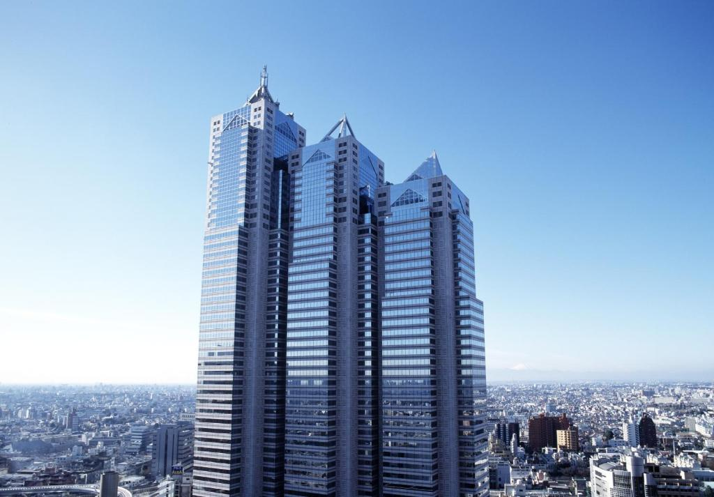
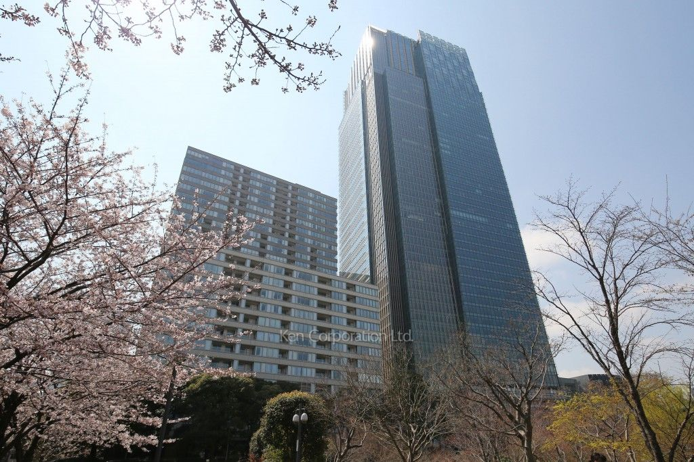
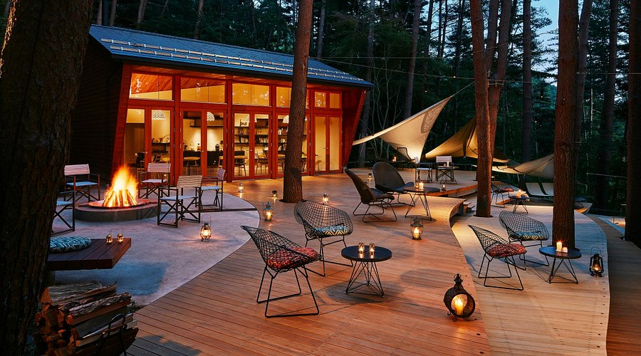
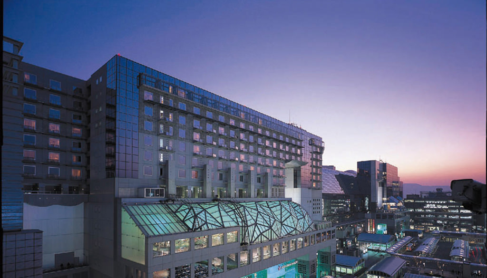
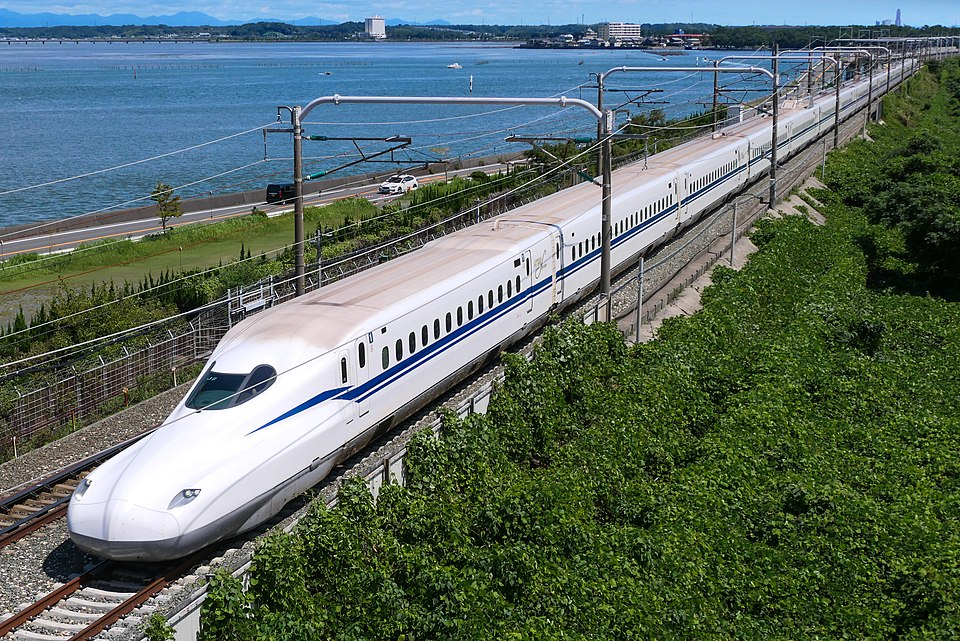
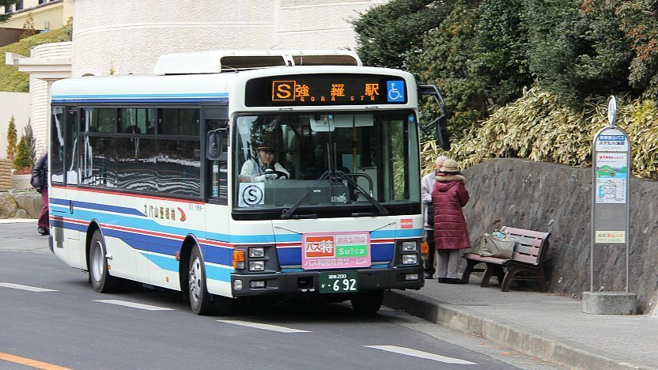
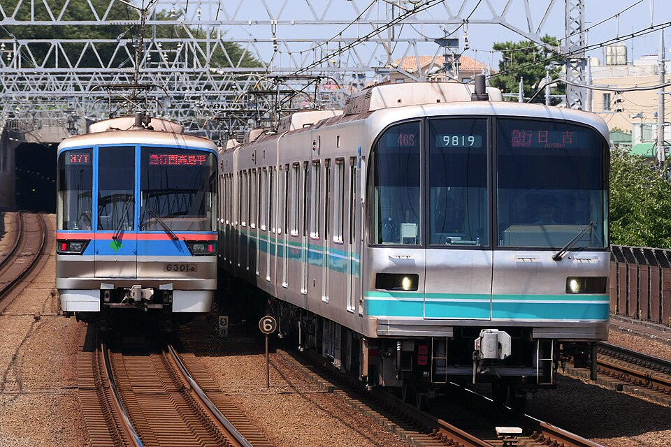
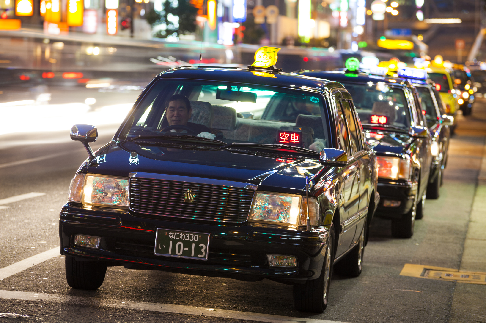

PARK HYATT - TOKYO
Located in the heart of Shinjuku, Park Hyatt Tokyo is a luxury hotel known for its elegant atmosphere and stunning views of Mount Fuji and the Tokyo skyline. It became internationally famous after being featured in the movie Lost in Translation. The hotel offers spacious rooms, fine dining, and a tranquil spa on the 47th floor.

THE RITZ-CARLTON – KYOTO
Set along the peaceful Kamogawa River, The Ritz-Carlton in Kyoto blends modern luxury with traditional Japanese design. Guests enjoy tatami-style rooms with a modern twist, river views, Michelin-starred cuisine, and close access to cultural landmarks like temples and gardens. It’s perfect for a luxurious and serene Kyoto experience.

HOSHINOYA FUJI – FUJIKAWAGUCHIKO
Hoshinoya Fuji is Japan’s first luxury glamping resort, located near Mount Fuji. This unique hotel offers minimalist, stylish cabins with breathtaking views of the iconic mountain. Guests can enjoy outdoor activities like canoeing, hiking, and stargazing, all while experiencing high-end hospitality in nature.

HOTEL GRANVIA – KYOTO
Conveniently located inside Kyoto Station, Hotel Granvia is a perfect choice for travelers who want easy access to transportation. The hotel features comfortable rooms, multiple restaurants, and modern amenities. It’s ideal for both business and leisure travelers looking to explore Kyoto and beyond.

SHINKANSEN (BULLET TRAIN)
The Shinkansen is Japan’s famous high-speed bullet train. It connects major cities like Tokyo, Kyoto, Osaka, Hiroshima, and more. It’s incredibly fast, clean, and always on time, making it perfect for exploring different regions of Japan comfortably and quickly. Best value for tourists. Best for long-distance travel.

BUSES
In areas where trains don’t reach, buses are a reliable option. Long-distance buses (like Willer Express or JR Bus) are a budget-friendly alternative to trains. Good for regional or rural travel.

LOCAL SUBWAY AND TRAIN LINES
Major cities like Tokyo, Osaka, and Kyoto have excellent subway and train systems. They’re efficient, safe, and easy to use with English signs. IC cards like Suica or Pasmo (Tokyo) and ICOCA (Osaka/Kyoto) can be used for quick access and work on most buses and trains. Best for city travel.

TAXIS
Taxis in Japan are clean and safe, but they can be expensive, especially for long distances. They’re a great option late at night when trains stop or if you’re traveling with luggage or in a group. Convenient but expensive.